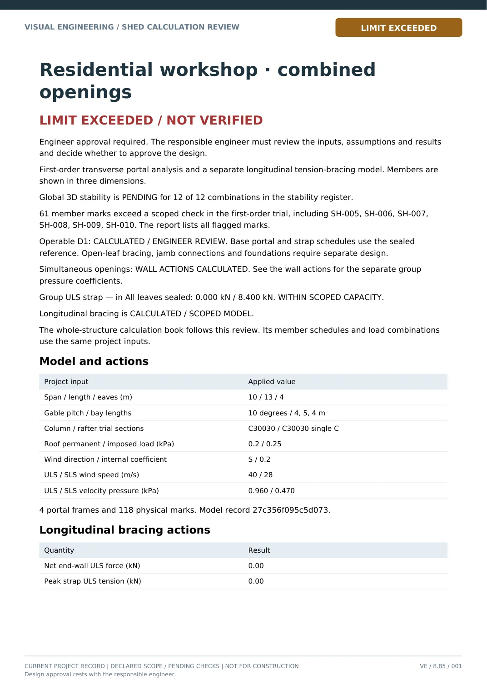

Side-wall wind and transverse portals
A south wind acts on a 10 × 13 m gable shed. A door and a window share the middle bay of its south wall. Read the wall forces, the load carried by the independent jamb feet and the share reaching each portal.
With both leaves open and internal pressure coefficient −0.60, the south wall delivers −16.848 kN to F2 and −18.520 kN to F3 at ultimate. Under 1.2G+W, member SH-009 on F3 reaches −24.812 kNm. The responsible engineer must verify the site assumptions, member capacities, restraints and foundations.
Loading the report…
